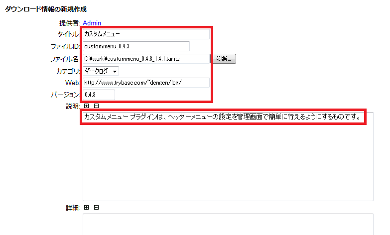

インストールには、手動でプラグイン用のディレクトリを作成し、適切なディレクトリへファイルをコピーする必要があります。
以下の説明で、
を表しています。
Downloads プラグインは、Filemgmt プラグインからデータを引き継ぐためのスクリプトを提供します。
Rootユーザとしてサイトにログインし、http://your_site/admin/plugins/downloads/fm2dm.php にアクセスして、指示に従ってください。
Downloads プラグインを、早速、使ってみましょう。

カテゴリの編集で設定する項目を以下に示します。
| 項目 | 説明 |
|---|---|
| カテゴリID | カテゴリのIDを設定します。半角英数、ハイフン、アンダーラインを用います。カテゴリIDの重複は許されません。 Geeklogサイトを多言語モードで運用する場合、カテゴリIDに言語IDを付加する必要があります。（例:cat_en, cat_ja ...） |
| タイトル | カテゴリのタイトルを設定します。 |
| カテゴリ画像 | カテゴリ画像（アイコン）のファイル名を設定します。 「アップロード」をクリックし、新たにカテゴリ画像をアップロードすることができます。 |
| 上位カテゴリ | 上位階層のカテゴリを選択します。 |
| 順序 | カテゴリリストにおける順番を設定します。なお、自動的に10づつの値に調整されます。 |
| 有効 | カテゴリの有効/無効を切り替えます。 無効にしたカテゴリ、下位に属するカテゴリ、配下のダウンロードファイルはダウンロードセクションに表示されません。 |
ダウンロード情報の編集で設定する項目を以下に示します。
| 項目 | 説明 |
|---|---|
| 提供者 | ダウンロードファイルの提供者です。自動的に設定されます。 |
| タイトル | ダウンロードファイルのタイトルを設定します。 |
| ファイルID | ダウンロードファイルのIDを設定します。半角英数、ハイフン、アンダーラインを用います。ファイルIDの重複は許されません。 |
| ファイル名 | ダウンロードファイルのファイル名を設定します。 「アップロード」をクリックし、ダウンロードファイルをアップロードして取り替えることができます。 |
| カテゴリ | ダウンロードファイルが属するカテゴリを選択します。 |
| タグ | タグを空白文字で区切って設定します。 タグを有効にするために、mystral-kkさんが公開しているタグプラグイン(Ver 0.6.0以降)をインストールしてください。 |
| Web | 提供者のホームページなど、インターネット上のURLを設定します。 初期値として、ユーザーの個人情報のホームページURLが設定されます。 |
| バージョン | ダウンロードファイルのバージョン番号を設定します。 |
| ファイルサイズ | ダウンロードファイルのファイルサイズです。自動的に設定されます。 |
| MD5値 | ダウンロードファイルのMD5値です。自動的に設定されます。 |
| 説明 | ダウンロードファイルの説明を設定します。簡潔に記述することをお奨めします。 投稿モードが[HTML]または[アドバンストエディタ]のとき、HTMLテキストで記述できます。 |
| 詳細 | ダウンロードファイルの詳細を設定します。 投稿モードが[HTML]または[アドバンストエディタ]のとき、HTMLテキストで記述できます。 |
| 投稿モード | 説明および詳細の投稿モードを選択します。 [テキスト] : プレーンテキスト [HTML] : HTMLテキスト [アドバンストエディタ] : HTMLテキストをアドバンストエディタで編集 [Wikiテキスト] : Wikiテキスト |
| ファイル画像 | ファイル画像（スナップショット）のファイル名を設定します。 「アップロード」をクリックし、新たにファイル画像をアップロードすることができます。 |
| MG 自動タグ | メディアギャラリーの自動タグを設定します。 MG 自動タグが設定されていると、ファイル画像（スナップショット）はMG 自動タグから生成される画像に置き換わります。 この項目は、コンフィギュレーションで「MG自動タグを有効にする」が「はい」に設定されているときに表示されます。 |
| コメントモード | コメント機能の動作を選択します。 [コメント有効] : コメントの投稿を許可 [コメント停止] : コメントの投稿を停止 [コメント終了] : コメントの投稿を終了 |
| 公開 | インターネットでのダウンロード情報の公開/非公開を選択します。 [はい] : ダウンロード情報を公開する（アクセス可） [いいえ] : ダウンロード情報を非公開にする（アクセス不可） |
| ファイルリストに掲載 | ダウンロード情報をファイルリストへ掲載するかどうかを選択します。 [はい] : ダウンロード情報をファイルリストへ掲載する [いいえ] : ダウンロード情報をファイルリストへ掲載しない この選択はインターネットでのアクセスの可否とは無関係です。 |
| 公開日 | ダウンロード情報の公開日を設定します。 未来の日付を設定すると、その日付が過ぎるまで公開されません。 |
| プロジェクト名 | ダウンロードファイルのプロジェクト名を設定します。 |
Downloads プラグインの設定は、「管理者用メニュー - コンフィギュレーション - ダウンロード」から変更できます。
| 項目 | 初期値 | 説明 |
|---|---|---|
| ログインを要求する (loginrequired) |
いいえ(0) | はい(1)にすると、登録ユーザしかダウンロードセクションにアクセスできなくなります。 この設定値よりも、「コンフィギュレーション - Geeklog - ユーザと投稿」の「すべてにログインを要求する(loginrequired)」の設定の方が優先されます。 |
| メニューに表示しない (hidemenu) |
いいえ(0) | はい(1)にすると、サイトのメニューに「ダウンロード」を表示しません。 |
| 所有者の削除と共に削除する (delete_download) |
いいえ(0) | はい(1)にすると、ダウンロード情報の所有者のアカウントが削除されたときに、所有していたすべてのダウンロード情報が削除されます。 いいえ(0)にすると、Rootグループに属するユーザ（たとえば、サイトの管理者）に引き継がれます。 |
| 1ページあたりのファイル表示件数 (download_perpage) |
5 | 1ページごとに表示するダウンロード情報の数を設定します。 |
| 人気を判断するヒット数のしきい値 (download_popular) |
20 | ダウンロード数がこの値以上になると「pop」アイコンが表示されます。 |
| 登録ユーザのアップロードを許可する (download_uploadselect) |
いいえ(0) | はい(1)にすると、登録ユーザはファイルのアップロード（投稿）ができるようになります。 いいえ(0)にすると、'downloads.upload'権限を持つユーザだけがアップロードできます。 |
| ファイル承認をメールで通知する (download_emailoption) |
はい(1) | はい(1)にすると、ファイルアップロード（投稿）が承認されたときに、その結果をアップロードしたユーザへメールで通知します。 |
| ファイルのパーミッション (filepermissions) |
755 | アップロードしたファイルのパーミッションを3桁の数字で設定します。 |
| デフォルトの投稿モード (postmode) |
テキスト(plaintext) | ダウンロード情報の説明および詳細の投稿モードの規定値を設定します。 'テキスト(plaintext)' : プレーンテキスト 'HTML(html)' : HTMLテキスト 'アドバンストエディタ(adveditor)' : HTMLテキストをアドバンストエディタで編集 'Wikiテキスト(wikitext)' : Wikiテキスト |
| MG自動タグを有効にする (enabled_mg_autotag) |
いいえ(0) | はい(1)にすると、Media Gallery プラグインの画像やアルバムをファイル画像（スナップショット）として使用できるようになります。 その際、Media Gallery プラグインの自動タグで設定します。 |
| 項目 | 初期値 | 説明 |
|---|---|---|
| サムネール画像を表示する (show_tn_image) |
はい(1) | いいえ(0)にすると、ファイル画像（スナップショット）のサムネール画像を表示しません。その代わりにファイル画像へのリンクアイコンを表示します。 |
| 存在する画像のみ表示する (show_tn_only_exists) |
いいえ(0) | はい(1)にすると、ファイル画像（スナップショット）のが登録されている場合のみ、サムネール画像を表示します。 |
| 最大幅 (max_tnimage_width) |
200 | サムネール画像の最大幅を設定します。 |
| 最大高 (max_tnimage_height) |
200 | サムネール画像の最大高を設定します。 |
| ファイル形式 (tnimage_format) |
PNG(png) | サムネール画像のファイル形式を設定します。 JPEG(jpeg) : JPEG形式 PNG(png) : PNG形式 |
| 項目 | 初期値 | 説明 |
|---|---|---|
| カテゴリ画像を表示する (download_useshots) |
はい(1) | いいえ(0)にすると、カテゴリ画像を表示しません。 |
| カテゴリ画像の幅 (download_shotwidth) |
32 | カテゴリ画像の幅を設定します。 |
| 項目 | 初期値 | 説明 |
|---|---|---|
| 新着ファイルを表示する (download_whatsnew) |
はい(1) | いいえ(0)にすると、新規ダウンロードが新着情報ブロックに表示されなくなります。 |
| 新着ファイルの表示件数 (download_newdownloads) |
10 | 新着情報ブロックに表示する新規ダウンロードの数を設定します。 |
| 新着ファイルと見なす日数 (whatsnew_perioddays) |
14 | ダウンロード情報が登録されてどれくらいの間、新着とみなされ、サイトの新着情報ブロックに表示されるかを決める期間を設定します（単位：日）。 |
| 項目 | 初期値 | 説明 |
|---|---|---|
| ダウンロード履歴の閲覧許可 (download_dlreport) |
ダウンロード編集者まで(editor) | ダウンロード履歴の閲覧を許される対象者を設定します。 'ダウンロード編集者まで(editor)' : 'downloads.editor'権限を持つユーザまで許可します。 '全てのユーザ(all)' : 全てのユーザに許可します。 '登録ユーザ(user)' : 登録ユーザまで許可します。 |
| 所有者自らのダウンロードを無視 (cut_own_download) |
はい(1) | いいえ(0)にすると、所有者自らがダウンロードしても、ダウンロード履歴として記録されません。 |
| 項目 | 初期値 | 説明 |
|---|---|---|
| ファイル (path_filestore) |
<public_html>/downloads_data/files/ | ダウンロードファイルを保存するリポジトリのパスを設定します。 セキュリティに配慮して非公開領域のパスを設定可能です。 |
| ファイル画像 (path_snapstore) |
<public_html>/downloads_data/snaps/ | ファイル画像を保存するリポジトリのパスを設定します。 必ず公開領域のパスを設定してください。 |
| カテゴリ画像 (path_snapcat) |
<public_html>/downloads_data/category_snaps/ | カテゴリ画像を保存するリポジトリのパスを設定します。 必ず公開領域のパスを設定してください。 |
| サムネール画像 (path_tnstore) |
<public_html>/downloads_data/tn/ | サムネール画像を保存するリポジトリのパスを設定します。 必ず公開領域のパスを設定してください。 |
| 項目 | 初期値 | 説明 |
|---|---|---|
| ファイル画像 (snapstore_url) |
http://your_site/downloads_data/snaps | ファイル画像を保存するリポジトリのURLを設定します。 |
| カテゴリ画像 (snapcat_url) |
http://your_site/downloads_data/category_snaps | カテゴリ画像を保存するリポジトリのURLを設定します。 |
| サムネール画像 (tnstore_url) |
http://your_site/downloads_data/tn | サムネール画像を保存するリポジトリのURLを設定します。 |
| 項目 | 初期値 | 説明 |
|---|---|---|
| パーミッション[0] | 表示・編集 | 所有者のパーミッションを設定します。この値がカテゴリ作成時の初期値となります。 |
| パーミッション[1] | 表示 | グループのパーミッションを設定します。この値がカテゴリ作成時の初期値となります。 |
| パーミッション[2] | 表示 | メンバーのパーミッションを設定します。この値がカテゴリ作成時の初期値となります。 |
| パーミッション[3] | 表示 | ゲストのパーミッションを設定します。この値がカテゴリ作成時の初期値となります。 |
DownloadsプラグインはGeeklogの多言語切り替え機能をサポートします。
DownloadsプラグインではカテゴリIDの末尾に言語IDを付加する方法を採用しています。
多言語切り替え機能の詳細については以下のWikiを参照してください。
一例として、英語と日本語を切り替える場合の使用方法を示します。
plugin_en
plugin_jaダウンロード情報へのリンクを自動タグ（Autotag）を使用して記事などへ埋め込むことができます。
タグ書式： [download:ダウンロードID]
例： [download:custommenu_0.4.3]
| バージョン | 公開日 | 説明 |
|---|---|---|
| 1.2.0 | 2014.9.27 | * Geeklog 2.1.0に対応しました。 * Geeklog 1.7.2以前のサポートを廃止しました。 * Geeklog 2.1.0上では編集時にCKEditorとTimepickerが使用可能になりました。 * 制限付きながらダウンロード情報の編集画面にプレビュー機能を追加しました。 |
| 1.1.0 | 2013.4.7 | * Geeklog 2.0.0に対応しました。 * レスポンシブWebデザインのDenimテーマに合わせてテンプレートとスタイルシートを変更しました。 * タグプラグイン(Ver 0.6.0以降)と連携してダウンロード情報にタグを付けられるようになりました。 |
| 1.0.4 | 2011.9.28 | * カテゴリの編集の際、アクセス権のうちグループの選択ができない問題を修正しました。 * セキュリティーポリシーを変更しました。カテゴリ管理の権限はルートユーザだけが所有するようになりました。 |
| 1.0.3 | 2011.3.6 | * 多言語モードでのカテゴリ選択ボックスの表示に関するバグを修正しました。 * カテゴリ作成時にエラーが発生する場合がある問題を修正しました。 * ダウンロードコンテンツのコメントのリンクに関するバグを修正しました。 |
| 1.0.2 | 2010.10.6 | バージョン1.0.1の修正が不十分だったので、さらに修正しました。 |
| 1.0.1 | 2010.10.5 | fm2dmコンバータで、特定のファイル名やGIF画像形式のスナップ画像のコンバートに失敗する問題を修正しました。 |
| 1.0.0 | 2010.10.3 | 初期バージョン |